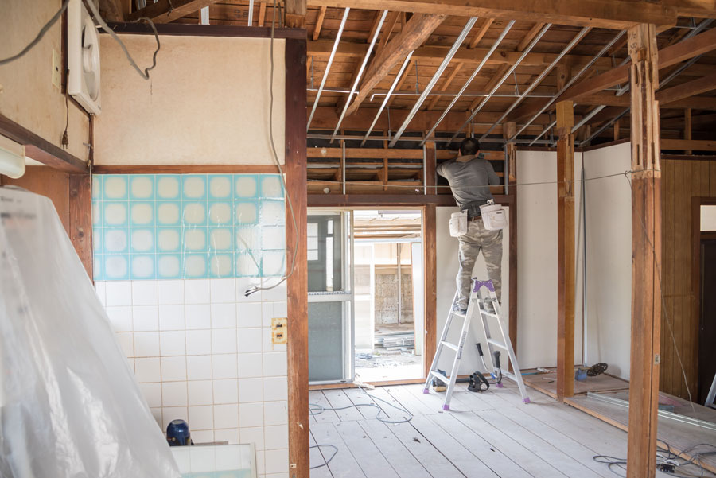
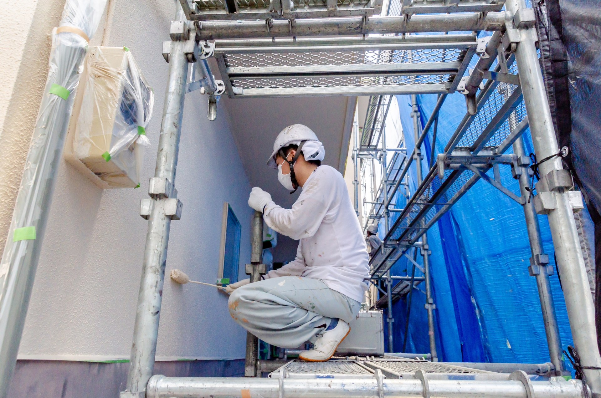
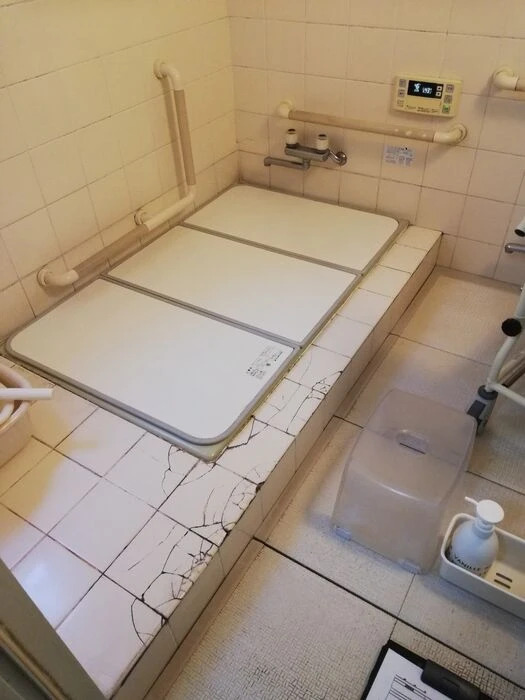
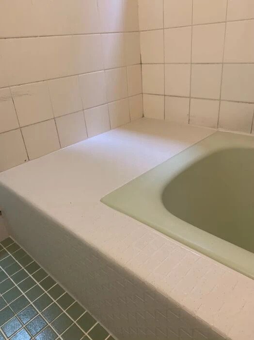
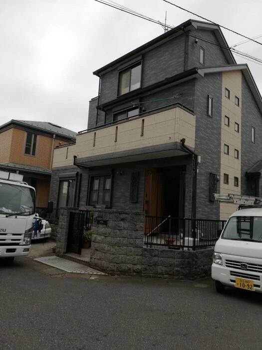
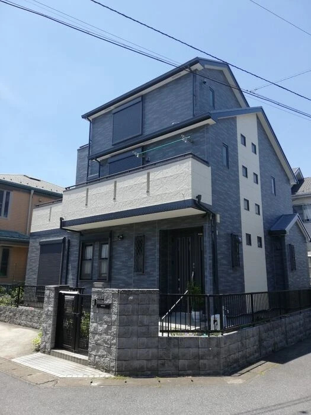
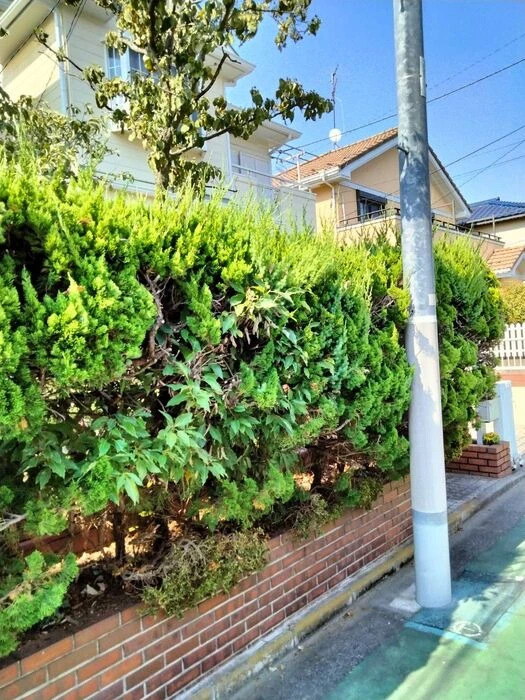
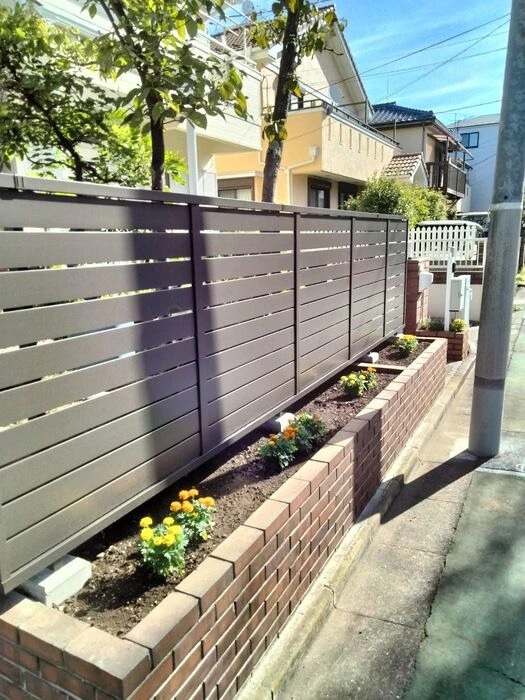

こんなお悩みありませんか？
小さな修繕からリフォームまで、職人の技術で住まいをまるごとサポートします。
-
ドアが引きずって開け閉めしにくい
-
内装や外装の傷みを直したい
-
床のギシギシ音が気になる
-
網戸やサッシを直したい
-
排水の詰まりを相談したい
-
どこに頼めばいいか分からない
小工事がある
About Us
創芯について
越谷市を中心に、
住まいのお困りごとを解決
総合リフォーム 創芯は、昭和60年創業の実績を持つ地域密着型のリフォーム会社です。
ドアの引きずり、床のギシギシ、排水詰まり、内装・外装の補修、塗装、リノベーションなど、住まいに関する幅広いお悩みに対応しています。
越谷市を中心に、春日部・草加・川口・足立・葛飾など周辺エリアのご相談も承ります。

Service
事業内容
小工事・修繕
ドアの開閉調整、床のきしみ、サッシや雨戸の調整、網戸の張替えなど、日常の小さなお困りごとに対応します。
内装・外装リフォーム
壁紙、床、内装補修、外装補修、塗装、防水など、住まいの状態に合わせて必要な工事をご提案します。
水回り・設備工事
排水詰まり、水道まわり、電気工事など、暮らしに関わる設備のお悩みもご相談いただけます。
外構・雑草駆除
外まわりの修繕や雑草駆除など、住まいの外側のお困りごとにも対応しています。
リノベーション・増改築
中古物件のリノベーションや、暮らしに合わせた住まいの見直しもご相談いただけます。
Features
当社の特徴

昭和60年創業の地域密着施工
創業以来、個人宅を中心に住まいのお困りごとに向き合ってきました。
地域に根付いた経験と技術を活かし、安心して相談できる住まいのパートナーを目指しています。
内容に合わせて専門職人が対応
大工、上下水道、電気、板金、塗装、内装、防水、外構など、工事内容に合わせて専門職人が対応します。
小さな補修から大きな工事まで、必要な施工を見極めてご提案いたします。
お困りごとを丁寧に伺う安心対応
職人目線だけで進めるのではなく、コーディネーターを中心にお客様のお困りごとやご希望を丁寧にヒアリングします。
内容をご理解いただいたうえで、お見積り・施工へ進めていきます。
現地調査・お見積りは無料です
工事内容や住まいの状態は、お客様ごとに異なります。
そのため、創芯では基本的に現地へ訪問し、状態を確認したうえでお見積りをご案内しています。
小さな補修や手直しから、内装・外装リフォーム、リノベーションまで、
まずはお気軽にご相談ください。
現地調査・お見積りは無料です。
Works
施工事例

Before

After

Before

After

Before

After
小さな困りごとも、
気軽に相談できる存在へ
住まいの不具合は、放っておくと毎日の暮らしのストレスにつながることがあります。
「これくらいで頼んでいいのかな」
「どの業者に相談すればいいか分からない」
そんな時こそ、総合リフォーム 創芯へご相談ください。
昭和60年創業の経験と、各分野の職人の技術を活かし、
お客様の暮らしに合った方法をご提案いたします。
FAQ
よくある質問
Q. 見積もりは無料でしょうか？
ご相談の流れといたしまして、
お電話・お問い合わせフォームからお問い合わせ
↓
現場調査ご訪問
お困りごとの細かい内容確認
寸法、状態など確認
※工事内容により現場にて口頭でお見積りご提示、その場での作業の場合もございます。
↓
お見積りご提示
内容のすり合わせ等お打ち合わせ
ここまで無料です！！
その後、ご家族でご協議いただき採用いただけましたら実際の日程、段取り等お打ち合わせいただきます。
Q. お支払い方法はどのようになっていますか？
お支払い方法は現金もしくは振込みになります。
Q. 工期の目途はどれくらいでしょうか？
見積もり際にご相談させていただいております。
Q. キャンセルしたい場合はどうすればよいですか？
-
①お問い合わせ時点での訪問キャンセルの場合
・お電話にてご連絡ください。 -
②お見積り後のキャンセルの場合
・お電話、お問い合わせフォームにてご連絡ください。
可能であれば、キャンセルの理由を教えていただけますと、勉強になります。 -
③ご注文後（契約後）のキャンセルの場合
・お電話にてご連絡ください。
・やむを得ない場合（病気、けが等）改めて日程調整のご相談をいたします。
・完全キャンセルの場合、材料費、作業費等ご請求させていただく場合がございます。
Access
店舗情報
総合リフォーム 創芯
- ADDRESS
- 〒343-0835
埼玉県越谷市蒲生西町１丁目６−５１ - TEL
- 050-5448-5154
- OPEN
- 9:00~18:00
- HOLIDAY
- 年中無休